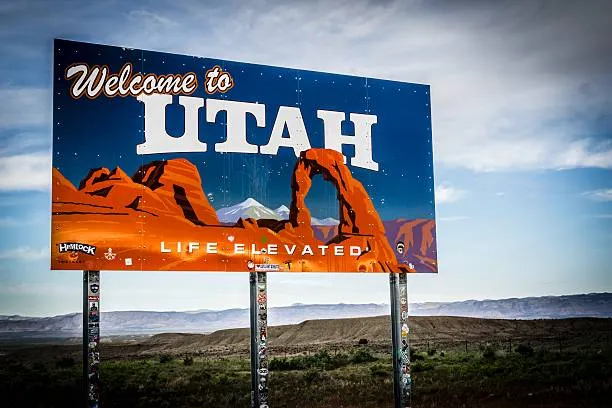

Utah

Utah, a captivating state in the western United States, boasts a diverse landscape that ranges from arid deserts to majestic mountain ranges. Renowned for its stunning red rock formations, including those found in iconic national parks such as Zion and Bryce Canyon, Utah is a haven for outdoor enthusiasts and nature lovers. The state is characterized by its unique geological features, with the Great Salt Lake, the largest saltwater lake in the Western Hemisphere, adding to its geographical allure.
Beyond its natural wonders, Utah is also rich in cultural and historical significance. The capital city, Salt Lake City, is not only the headquarters of The Church of Jesus Christ of Latter-day Saints but also a vibrant urban center with a thriving arts and culinary scene. The state's commitment to winter sports is evident in its hosting of the 2002 Winter Olympics, leaving a lasting legacy of world-class ski resorts and recreational opportunities in the Wasatch Mountains.
Utah's dynamic blend of outdoor adventure, cultural richness, and friendly communities make it a unique destination for those seeking both natural beauty and diverse experiences in the heart of the American West.